From choosing a name that makes them sound like some sort of urban public works department, to their music itself, Richmond, Virginia's Municipal Waste openly bow down to the memory of '80s thrash metal and crossover decades after, and a few hundred miles away from, the original movement's heyday in New York City. Emerging in 2001 with an eponymous EP, the group's 2003 debut long-player Waste Em All helped pave the way for a crossover resurgence in the early 2000s. They continued to carry the thrash-punk torch on subsequent outings like Massive Aggressive (2009) and Slime and Punishment (2017) with vocalist Tony Foresta and guitarist Ryan Waste serving as the group's sole constant members. Led by picturesquely named vocalist Tony "Guardrail" Foresta, Municipal Waste played their first show on New Year's Eve 2001, then spent the next few years working on demos, recording the odd EP and split release, and juggling musicians until solidifying its membership around Guardrail, guitarist Ryan Waste, and bassist Land Phil. Veteran drummer Dave Witte (ex-, , , etc.) joined their ranks shortly after the band signed with and recorded 2004's Waste Em All with producer Corey Smoot (aka Flattus Maximus of ). The album was instantly embraced by discerning metal fans for its retro-tastic revival, received overwhelmingly positive reviews, and landed Municipal Waste supporting slots on tours with and . Late 2005 saw the unveiling of the band's equally impressive sophomore effort, Hazardous Mutation, which helped them break big across Europe, and resulted in even more touring opportunities. Two years later, the group once again returned to the studio with producer Zeuss (, , etc.), and emerged with their third irreverent opus, The Art of Partying, which was followed by a headlining tour of Europe and a series of dates with crossover legends . Massive Aggressive arrived in 2009 to accolades both at home and abroad, as did 2012's The Fatal Feast, their first outing for . The band tapped bassist Land Phil to handle the engineering of their sixth studio long-player, 2017's Slime and Punishment, which landed at the number three slot on the U.S. Heatseekers chart. In 2019 the band issued The Last Rager, a reliably punishing four-song EP.
| 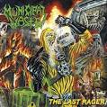 | 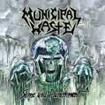 | |
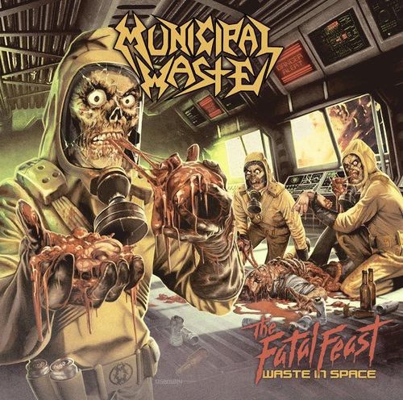 | 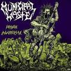 | 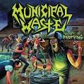 | 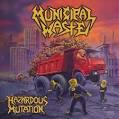 | 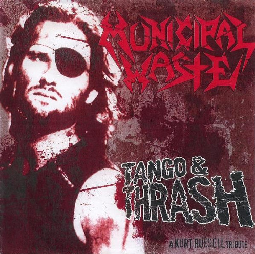 | 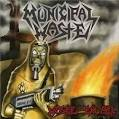 | 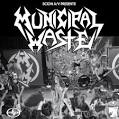 | 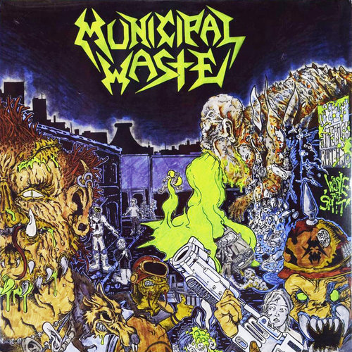 | 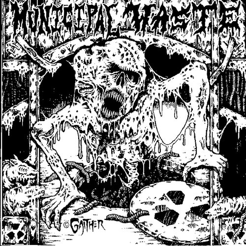 |
| October 11, 2019 | June 23, 2017 | June 12, 2012 | April 10, 2012 | August 25, 2009 | June 12, 2007 | September 20, 2005 | April 20, 2004 | January 27, 2003 | 2001 | 2002 | 2001 |
| The Last Rager | Slime and Punishment | Toxic Waste | The Fatal Feast | Massive Aggressive | The Art of Partying | Hazardous Mutation | Tango and Thrash | Waste 'Em All | Municipal Waste | Municipal Waste / Crucial Unit SPLIT LP | Self Titled EP |